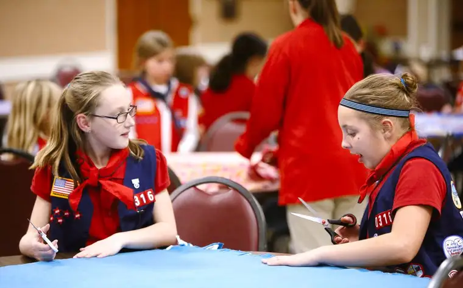

FARGO – As a young girl, Lynn Kotrba of Moorhead looked with yearning at the fun her friends in Girl Scouts seemed to be having.
But for her, it was not to be. The daughter of a police officer and mother who died when Kotrba was only 12, she was instead tasked with helping keep her five siblings thriving at the family’s home in East Grand Forks, Minn.
“We had annual rake-a-thons, Thanksgiving food baskets and such,” she says. “And I have always had a heart for service and doing things for others.”
As an adult, her longings have been channeled into mothering seven children — five of them girls — and finally getting involved in Scouting through chartering an organization that, Kotrba says, fits her family’s passions to a T.
“American Heritage Girls gives girls the skills they need to develop into women of integrity,” Kotrba says, “through leadership opportunity, skills-building, faith-building and so much more.”
Described by its national office as a “Christ-centered, character-development program,” Kotrba says American Heritage Girls has exceeded her hopes.
“We do the badge work, like your typical Scouting organizations,” she says, “but we want, in all of our meetings and projects, for the girls to be surrounded with God’s love.”
The nondenominational organization, which was started with just 10 young members in 1995 by a group of parents in Cincinnati, has expanded into every state, with more than 36,000 girls involved nationally.
North Dakota has two troops: the Fargo troop Kotrba began in 2012, and another in Grand Forks, with interest expressed in Jamestown and Bismarck.
In its first year, the Fargo group attracted 25 girls, and by its second, 35 had joined. The third year brought in 56 girls, and this year’s troop numbers 62, with the possibility of an “overflow” troop starting in south Fargo.
Each meeting begins and ends in prayer, led either by an adult troop “shepherd” or the girls themselves, who Kotrba says volunteer with zeal. This sets the tone for service projects and badge work; each badge project comes attached with a Scripture verse.
Eunah Fischer, an adult leader, has been involved since her daughter, Maddie, a fifth-grader, was in second grade. Like Kotrba, Fischer didn’t have a chance to be involved in Scouting growing up, but says she “always looked longingly after” such groups.
Her husband, Ken, an Eagle Scout, encouraged his children to be involved in Scouting in some way.
Despite having zero camping experience, Fischer says, she not only set up and slept in her own tent during a troop camping trip this past summer, but even enjoyed the experience. “I’ve also really enjoyed meeting the other parents and leaders — which is mostly women, but some dads, too.”
Fischer, a Northern California native, says her experience with American Heritage Girls has helped complete a picture for her of a strong community identity.
“When I think of that quintessential community of home, school, church, neighbors, I feel like we’re really living that as a family here, and we love that,” she says, adding, “The service of American Heritage Girls is a unique aspect. Kudos to Lynn for coordinating and rallying the volunteers that we have.”
Maddie Fischer, 10, says she loves the bowling and swimming outings, but her favorite event is the annual father-daughter pizza-creation contest. “We haven’t won, yet,” she says, adding that she loves trying. “Next time we might make a dessert pizza.”
Through their projects, Kotrba says, the girls have learned about the importance of modesty and “being princesses in God’s eyes,” as well as the goal of “living for others.”
Projects have included creating birthday cards for the elderly, baking Christmas cookies for the homebound, and their annual HUGS project, which has, to date, produced 825 duffel bags filled with fun items and necessities for area children in need. HUGS stands for Heritage United Giving Services, and is a service arm of American Heritage Girls.
They’ve also served stew and breakfast to veterans, prepared food packets for starving children, and brought thank-you cards and religious medals to local police and fire departments.
Fargo police Sgt. Shawn Gamradt wasn’t in the office the day the girls made their surprise visit, but found the cards in the break room, and chose one, which hangs in his office.
“It said, ‘Thanks for catching the bad guys,’ and had stick pictures, with the police officer saying, ‘You’re coming with me,’ ” he says, noting that the card and medal of St. Michael the Archangel (the patron saint of police) uplifted him.
“I have a St. Michael medal pinned on my bullet-proof vest, and I know some officers have tattoos with St. Michael,” he says. “St. Michael is a much higher power than I am. (Prayer and God’s help) is probably one of the first things I think of every day.”
Kotrba says the raw emotion the girls witnessed from the police and fire personnel was priceless. But her commitment to the troop goes beyond that.
“I have found American Heritage Girls to be a calling from God,” she says. “It is something God put on my plate and said, ‘Go for it,’ and it fits in perfectly with my life, no matter how crazy busy things are. I tell people all the time, ‘I could not do this without God’s hand on it.’ God deserves the credit.”
[For the sake of having a repository for my newspaper columns and articles, I reprint them here, with permission, a week after their run date. The preceding ran in The Forum newspaper on Dec. 12, 2015.]